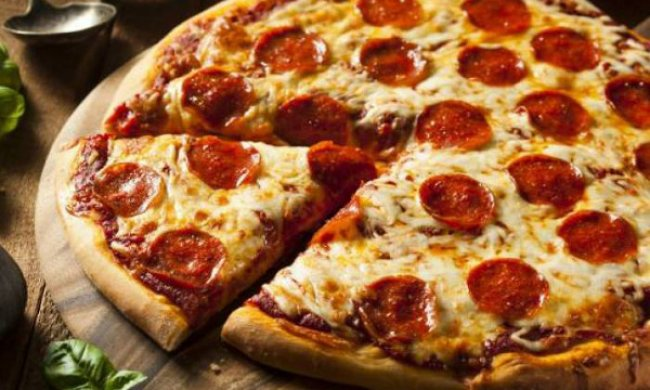
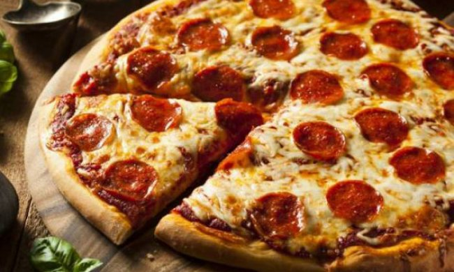

PIZZA DE PEPERONI ❤️

 

La pizza de pepperoni es una delicia irresistible. Su costra dorada y crujiente sirve de lienzo para una
abundante cobertura de finas rodajas de pepperoni, que resplandecen en un rojo tentador. El queso derretido se
derrama sobre la salsa de tomate, creando una mezcla perfectamente equilibrada de sabores y texturas. El aroma
de ingredientes recién horneados inunda el aire, despertando el apetito y prometiendo un festín de placer
culinario. Esta pizza, presentada sobre una tabla de cortar rústica, es una invitación irresistible a satisfacer
tus deseos gastronómicos.
Utensillos:
- Bandeja para hornear pizza
- Rodillo para masa
- Molde para pizza
- De 12 a 14 pulgadas (30 a 35 centrimetros)
- Cortador para pizza
- Pincel de cocina
- Cuchillo afilado
- Espatula para pizza
- Horno
ingredientes
- 1 taza de agua tibia (aproximadamente 240 ml)
- 2 1/4 cucharaditas de levadura seca activa
- 2 1/2 a 3 tazas de harina de trigo
- 2 cucharadas de aceite de oliva
- 1 cucharadita de sal
- 1 cucharadita de azúcar
- Pepperoni en rodajas
- 2 tazas de queso mozzarella rallado (o más según tu gusto)
- Otras coberturas opcionales, como champiñones, pimientos, cebolla, etc.
A COCINAR !
Pasos a seguir:
- Preparación de los ingredientes:
- 1 taza de agua tibia (aproximadamente 240 ml)
- 2 1/4 cucharaditas de levadura seca activa
- 2 1/2 a 3 tazas de harina de trigo
- 2 cucharadas de aceite de oliva
- 1 cucharadita de sal
- 1 cucharadita de azúcar
- Activación de la levadura:
- En un tazón pequeño, disuelve las 2 1/4 cucharaditas de levadura seca activa en 1 taza de agua tibia. Agrega 1 cucharadita de azúcar y mezcla bien. Deja reposar durante unos minutos hasta que la levadura comience a burbujear.
- Preparación de la masa:
- En un tazón grande, mezcla 2 1/2 a 3 tazas de harina de trigo y 1 cucharadita de sal.
- Agrega la levadura activada y 2 cucharadas de aceite de oliva a la mezcla de harina.
- Amasa la masa en una superficie enharinada durante unos minutos hasta que esté suave y elástica. Agrega más harina si es necesario para evitar que la masa esté demasiado pegajosa.
- Leudado de la masa:
- Coloca la masa en un tazón ligeramente aceitado, cúbrelo con un paño húmedo y déjalo reposar en un lugar cálido durante aproximadamente una hora, o hasta que la masa haya duplicado su tamaño.
- Pasos para preparar la pizza:
- Preparación de la salsa:
- Mientras la masa sube, puedes preparar la salsa de pizza. Mezcla una lata (14-16 oz) de tomates triturados o salsa de tomate para pizza con 1 cucharadita de aceite de oliva, ajo picado (opcional), 1 cucharadita de orégano seco y sal y pimienta al gusto. Reserva la salsa.
- Precalentamiento del horno:
- Precalienta el horno a 220°C (425°F).
- Estirar la masa:
- Una vez que la masa haya duplicado su tamaño, divídela en porciones y estira cada porción en una superficie enharinada para formar la base de la pizza.
- Montaje de la pizza:
- Coloca la base de pizza en una bandeja para horno o una piedra para pizza.
- Extiende la salsa de tomate sobre la base de la pizza y luego esparce el queso mozzarella sobre la salsa.
- Coloca las rodajas de pepperoni y cualquier otra cobertura que desees sobre el queso.
- Horneado:
- Hornea la pizza en el horno precalentado durante aproximadamente 12-15 minutos, o hasta que la masa esté dorada y el queso esté burbujeante y dorado.
- Servir:
- Saca la pizza del horno, déjala enfriar un poco y luego córtala en porciones. ¡Disfruta de tu pizza de pepperoni casera!
Nota:
- Temperatura del Horno:
- Asegúrate de precalentar el horno a la temperatura adecuada antes de hornear la pizza. Un horno caliente es esencial para lograr una base crujiente y cocinar uniformemente las coberturas.
- Distribución Uniforme de Ingredientes:
- Al agregar las coberturas, distribúyelas de manera uniforme sobre la pizza para garantizar que cada bocado tenga un equilibrio de sabores. Evita acumular ingredientes en el centro, ya que esto puede hacer que la masa no se cocine adecuadamente en esa área.
- No Excederse con la Salsa:
- No apliques demasiada salsa de tomate, ya que esto puede empapar la masa y hacer que la pizza quede blanda en lugar de crujiente. Unas cucharadas de salsa extendida de manera uniforme son suficientes para dar sabor sin saturar la pizza.
Informacion Nutrimental:
| Por rebanada aproximadamente
|
| Calorias |
Grasa Total |
Grasa Saturada |
Colesterol |
Sodio |
Carbohidratos |
Fibra |
Azucar |
Proteina |
| 285-350 calorías |
12-15 gramos |
5-7 gramos |
20-30 mg |
600-800 mg |
30-35 gramos |
Menos de 2 gramos |
2-3 gramos |
12-15 gramos |
Quieres conocer mas recetas? Contactanos ‚ù§Ô∏èüëå
Ir a la pagina del administrador
Ir al inicio